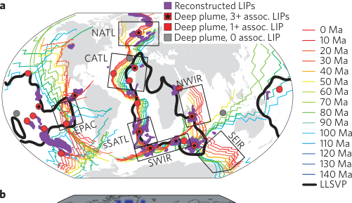
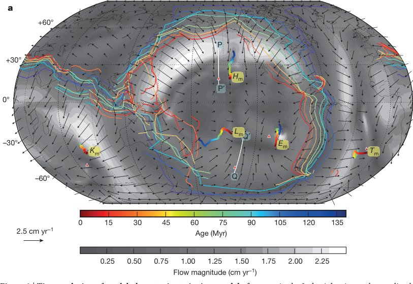
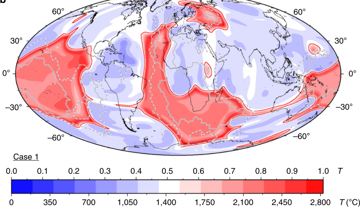
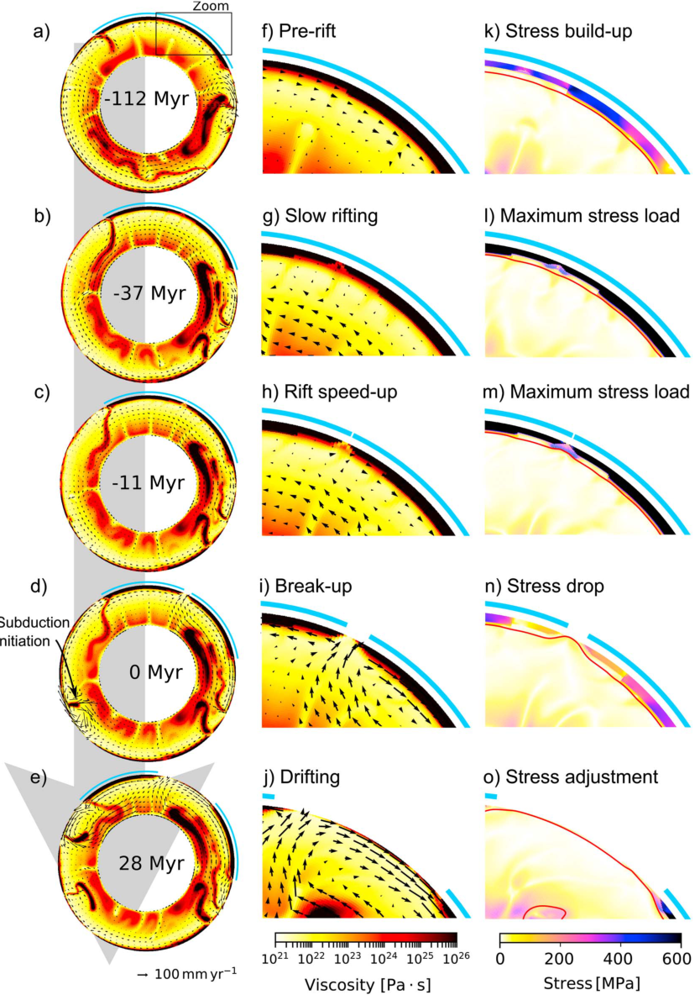
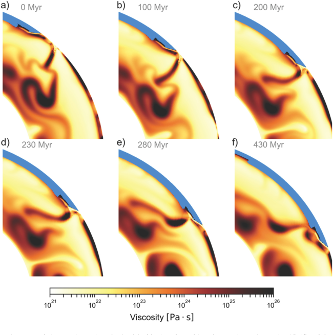
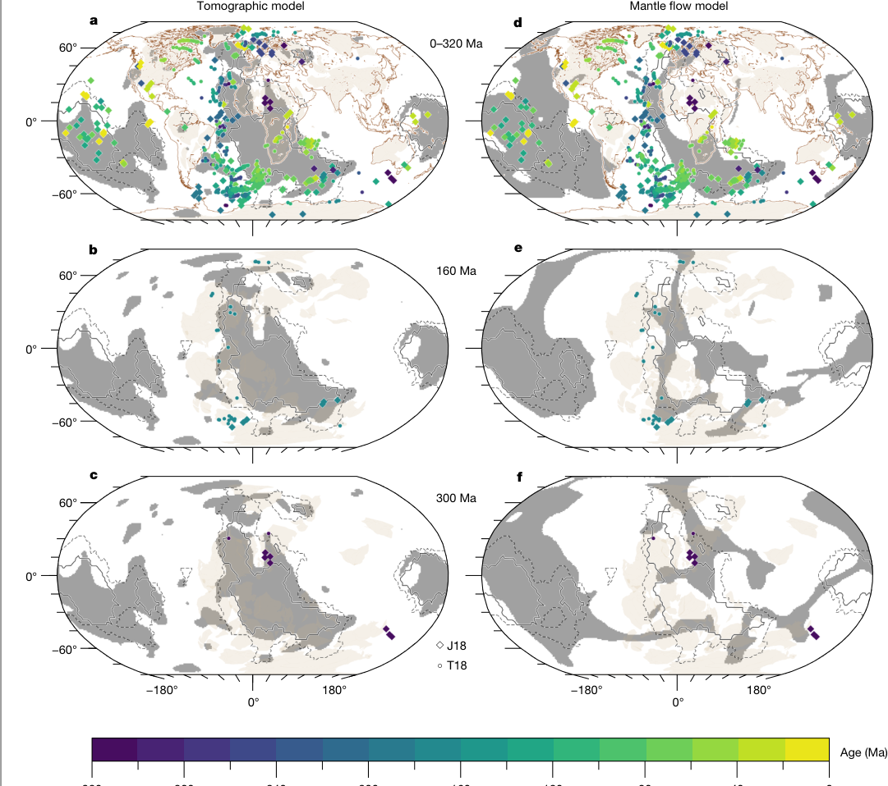
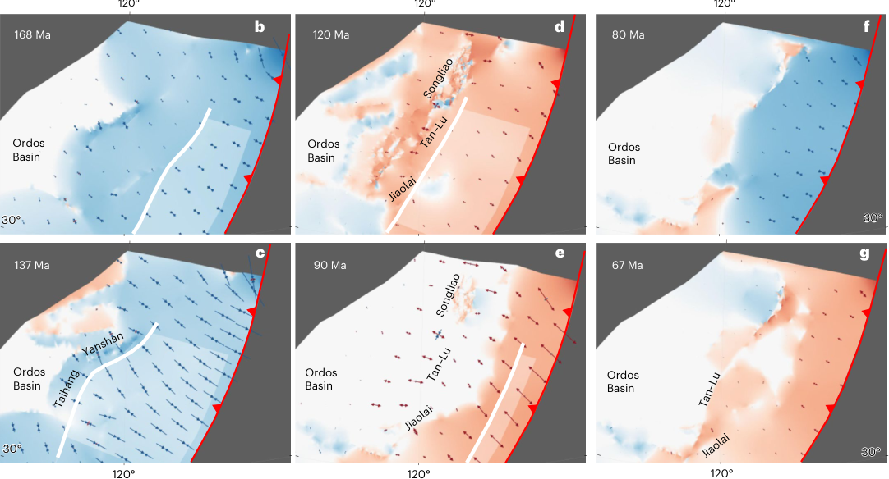

Whittaker, Afonso, Masterton, Müller, Wessel, Williams & Seton (2015, Nature Geoscience) used a global plate model to reconstruct the position of large igneous provinces relative to mantle plumes and mid-ocean ridges at the time each erupted, and found they repeatedly form where ridges and plumes interact. That challenges the standard assumption that the geometry of mid-ocean ridges is independent of what's happening deep in the lower mantle. The map below plots that reconstructed record of ridge-plume interaction and large igneous province formation.

Fig. 1a, Whittaker et al. (2015).
Hassan, Flament, Gurnis, Bower & Müller (2016, Nature) modelled how a fast-moving Pacific plate and a migrating network of subduction zones deform the Pacific LLSVP at the base of the mantle, dragging the plume source beneath Hawai'i southward. The predicted hotspot track reproduces the sharp Hawaiian-Emperor bend without needing a major change in Pacific plate motion, and implies the Hawaiian plume has been active for around 140 million years, longer than usually assumed. The map below shows the modelled plume trajectories and mantle flow field behind that result.

Fig. 1a, Hassan et al. (2016).
Flament, Williams, Müller, Gurnis & Bower (2017, Nature Communications) used mantle flow models spanning 230 million years to explain the Perm Anomaly, a small thermochemical structure beneath Eurasia that resembles a miniature version of the LLSVPs beneath Africa and the Pacific. The models show it formed in isolation within a long-lived, closed subduction network more than 150 million years ago, then migrated roughly 1,500 km westward, evidence that deep mantle structures are more mobile than the standard fixed-LLSVP picture assumes. The map below shows the model's predicted present-day lower-mantle temperature structure.

Fig. 1b, Flament et al. (2017).
Ulvrová, Brune & Williams (2019, Geophysical Research Letters) ran global mantle convection models in which plate boundaries, continents and rifts all emerge self-consistently, rather than being prescribed, to study how continents accelerate and decelerate as they break apart. Continental rupture follows a characteristic four-phase evolution (slow initial rifting, a sudden speed-up, fast breakup, and a deceleration), and that speed-up is compensated elsewhere on the globe by subduction acceleration or even the initiation of new subduction zones. The panels below track one modelled rift, in cross-section, through that full cycle.

Fig. 1, Ulvrová et al. (2019, GRL).
Ulvrová, Coltice, Williams & Tackley (2019, Earth and Planetary Science Letters) used the same style of self-consistent convection model to ask a statistical question: where, relative to continents, does subduction actually initiate and cease? Subduction zones that are born next to a continent tend to stay attached to it for their entire lifespan, while intra-oceanic subduction zones drift through the ocean before usually dying close to a continental margin. The six snapshots below track one such subduction zone retreating toward, then reversing polarity beside, a continental margin.

Fig. 2, Ulvrová et al. (2019, EPSL).
Flament, Bodur, Williams & Merdith (2022, Nature) reconstructed mantle flow back to one billion years ago to test whether the long-term correlation between volcanic eruptions and the LLSVPs really requires those basal mantle structures to be fixed in place, as is often assumed. It doesn't: mobile basal mantle structures explain the volcanic record just as well as stationary ones. In the models, cold lithosphere sank into the African hemisphere between 740 and 500 million years ago, and the structure beneath Africa only assembled into the coherent shape we see today as recently as 60 million years ago. The maps below compare the tomographically imaged structure (left) with the mobile model prediction (right) at three points in time.

Fig. 1, Flament et al. (2022).
Liu, Zhang, Ma, Williams, Lin, Wan, Ran & Gurnis (2024, Nature Geoscience) built four-dimensional mantle flow models of the North China Craton since the late Mesozoic to work out what actually drives the deformation, and eventual destruction, of ancient cratons. Flat-slab subduction of the Pacific plate first shortened and thickened the craton's lithosphere; subsequent rollback of that same flat slab then drove seaward extension and thinning, reshaping surface topography and basin sediments along the way. The reconstructions below track the evolving subduction geometry and strain field beneath the craton from 168 to 67 million years ago.

Fig. 1b–g, Liu et al. (2024).
Explore the mantle
 Open the live, interactive viewer ↗
Open the live, interactive viewer ↗
Drag to rotate, add more globes, or draw a cutaway polygon in the live viewer. A related paleoclimate viewer runs the same reconstructed geography through 540 million years of surface temperature.